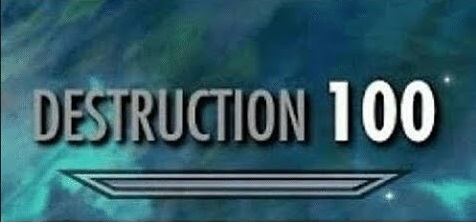
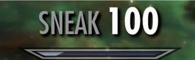

| Original | Beispiele | Erklärung | Bewertung |
|  | Dieses Meme gehört zu den Skyrim Memes. Skyrim ist ein Spiel, bei dem man seinen Charakter auf bestimmte Fähigkeiten trainieren kann. Die "100" steht für die Stärke des Skill und steht gleichtzeitig für die
höhste Stufe der Fähikeit. Destruction ist die Fähigkeit etwas zu zerstören. Die Skyrim Skill Tree Memes werden benutzt, um ,als Untertitel oder Reaction Memes, Konversationen zu kommentieren. Mit diesem Meme kann man noch einmal das Gesagte verstärken. |
Destruction100 bekommt von mir eine 6/10, weil das Meme langsam ausgelutscht ist. Man kann es aber immernoch verwenden, aber es stirbt , wie gesagt, langsam. |
|
| Herkunft: siehe Destruction100
Illusion ist die Fähigkeit etwas verdeckt zu halten. Wenn etwas anders scheint als es in der Realität ist (siehe Beispiel). |
Illusion100 bekommt von mir eine 5/10. Die Bilder zu diesem Meme sind meistens eher unlustig und es war nie wirklich im Trend. |
||
|  | Herkunft: siehe Destruction100
Sneak ist die Fähigkeit etwas heimlich zu tun, ohne das jemand etwas mitbekommt. Sich an etwas heranzuschleichen oder den gegenüber auszutricksen (siehe Beispiel). |
Sneak100 bekommt eine 9/10. Die Bilder zu diesem Reaction Meme sind oft ziemlich lustig und Sneak100 wird von den 3 genanneten Skyrim Skill Tree Memes am meisten benutzt und ist somit am populärsten. Außerdem gibt es noch viele weitere Variationen des Memes (z.B. Alabama, Crossovers). |